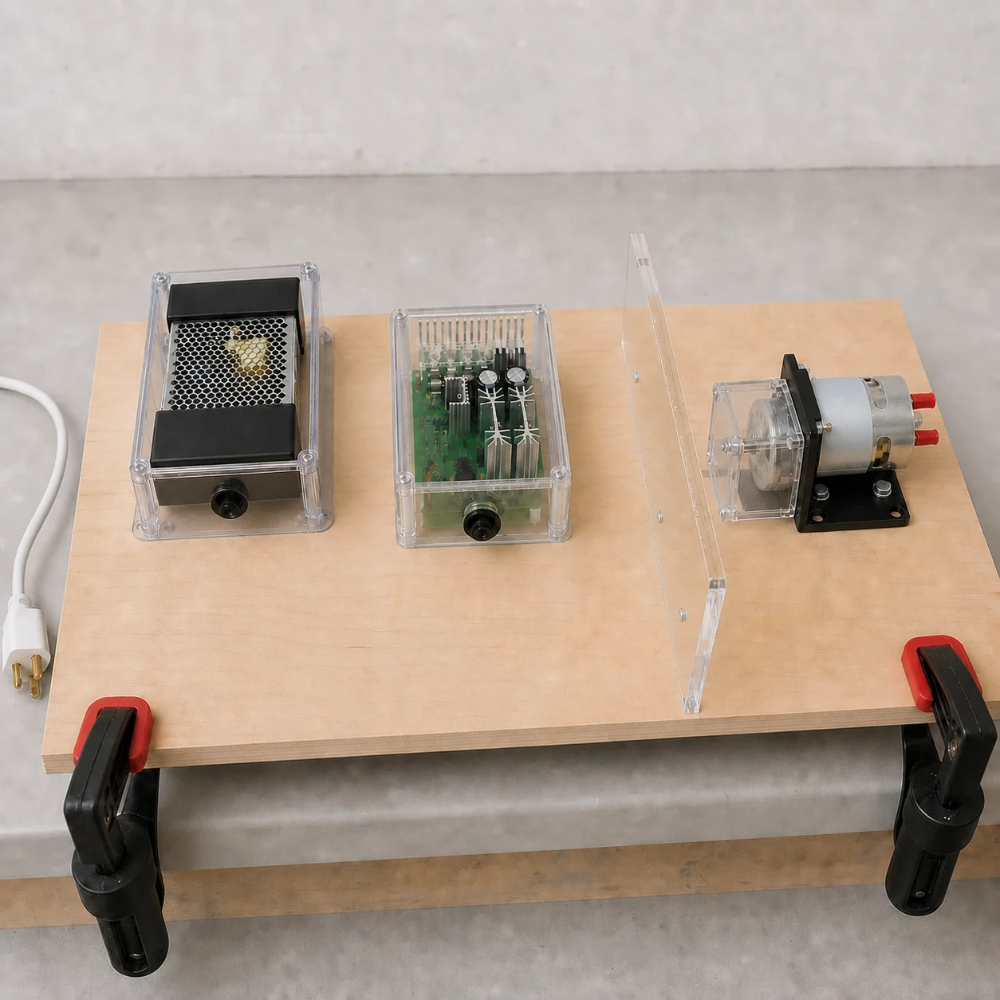
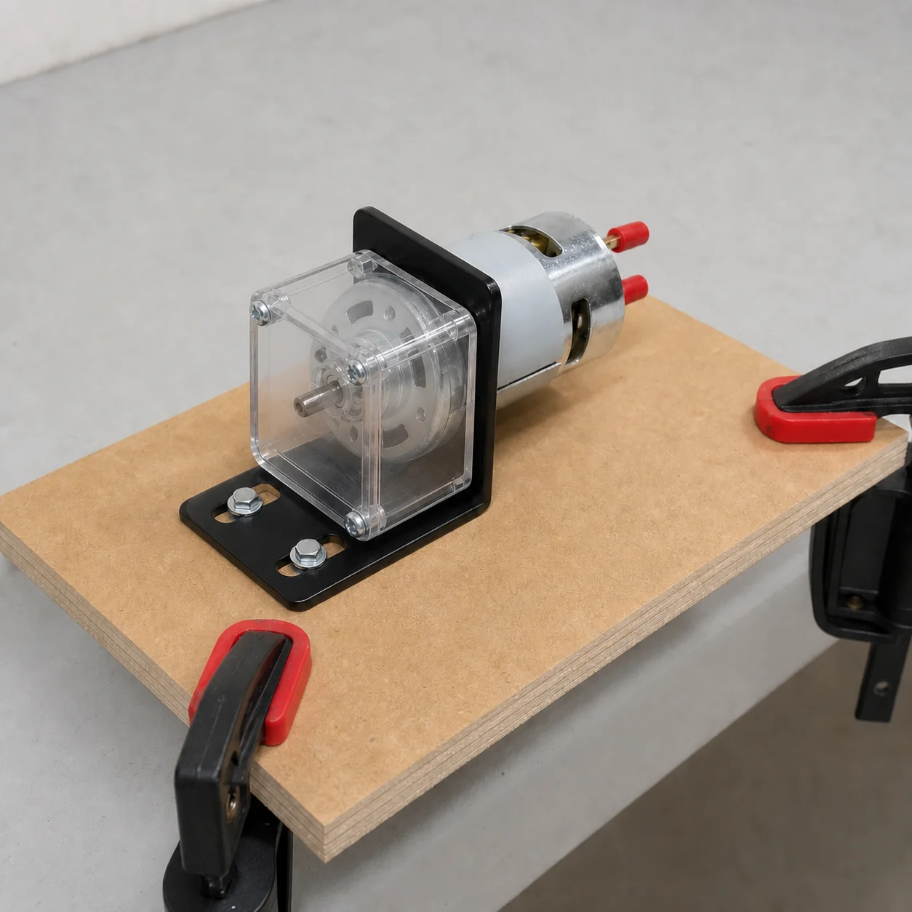
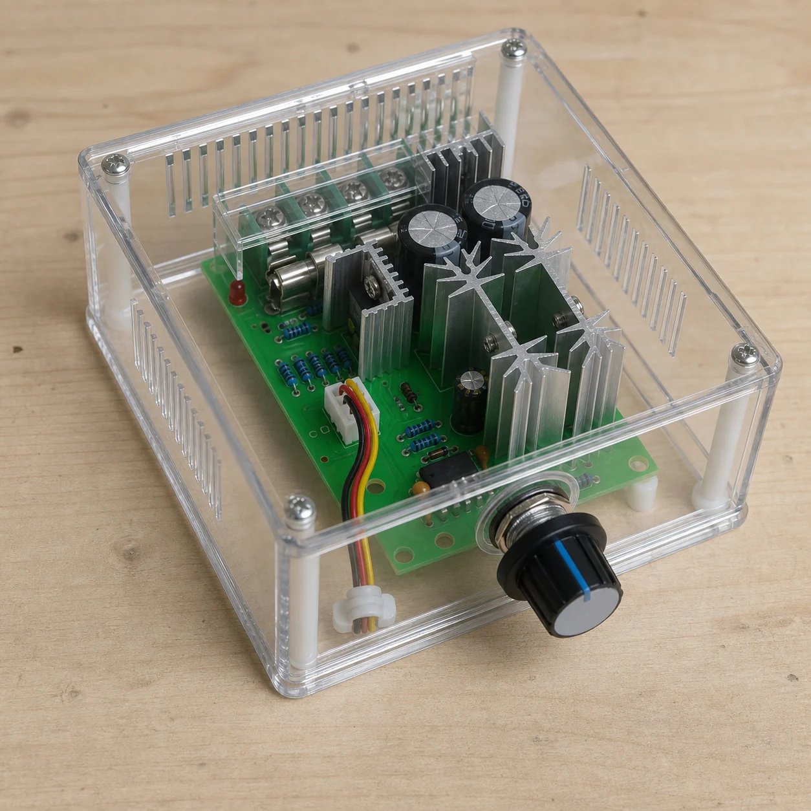

Puede etiquetar, fotografiar y completar notas con todo desconectado. No hace la primera energización.
Capítulo 2 · Movimiento controlado
De los 12 V a la primera rotación
Preparar el PWM y hacer girar el motor desnudo, sujeto y resguardado.
Resultado buscado
Dejar un banco de 12 V con corte accesible, protección DC definida, PWM fijo y motor 775 inmóvil sobre su soporte, y registrar una primera rotación breve y controlada.
Al terminar, el motor vuelve a quedar sin tensión. El rotor, adaptador, discos, imanes y sensores siguen fuera.
Puerta de entrada
No se empieza hasta que el Capítulo 1 esté realmente terminado: fuente cerrada, salida de 12 V medida, polaridad confirmada y enchufe fuera de la toma.
Este capítulo es de baja tensión, pero el motor puede arrancar con mucha corriente y su eje puede atrapar, golpear o proyectar piezas.
Confirma bornes y corrientes, elige protección y cable, conecta y controla la prueba.
Ante duda, movimiento inesperado, olor, humo, ruido, vibración, calor o cable desplazado.
0 comprobaciones realizadas
Capítulo 2 · Mapa de energía
Qué hace el PWM y qué no hace
La fuente entrega 12 V DC; el PWM dosifica la energía que recibe el motor.
Fuente · 12 V DC
Protección + corte DC
Entrada del PWM
Salida PWM · motor 775
Sí hace
- Conmuta rápidamente la alimentación del motor y cambia el ciclo de trabajo.
- Permite buscar una velocidad repetible cuando el conjunto esté caracterizado.
- Entrega por sus bornes de salida una señal pulsada, no una nueva fuente DC regulada.
No garantiza
- No limita por sí solo la corriente a un valor seguro.
- El “20 A” del anuncio no demuestra una corriente continua admisible en el montaje real.
- El mínimo del mando puede no equivaler a apagado ni impedir un arranque al volver la energía.
| Fuente anunciada | 12 V, 10 A, 120 W. Se utiliza únicamente si el Capítulo 1 ha confirmado la unidad física y su salida real. |
|---|---|
| PWM anunciado | 10–60 V y 20 A. Dato comercial pendiente de verificar en el controlador físico y su documentación. |
| Motor anunciado | Motor 775 de 12/24 V. La tensión concreta, corriente en vacío, corriente de bloqueo y servicio del motor recibido siguen sin estar demostrados. |
| Cable disponible | Par rojo/negro AWG18. El color ayuda a mantener polaridad; su aptitud depende de corriente, longitud, aislamiento, temperatura, agrupamiento y terminal. |
Capítulo 2 · Antes de conectar
Datos reales que deben cerrar los TODO
Las fotografías del paquete permiten reconocer las piezas, pero no autorizan su conexión.
1
Distribución previa del banco
Referencia generadaSin cablear

Abrir imagenReferencia generada para ordenar el banco. No muestra una conexión aprobada, no sustituye resguardos reales y mantiene la clavija tipo B fuera de la toma.
TODO bloqueantes
PWM real: fabricante/modelo, manual, orden exacto de entrada/salida, polaridad, corriente continua, pico permitido, ventilación y comportamiento al arrancar.
Motor real: tensión nominal, corriente en vacío, corriente de arranque/bloqueo, sentido de giro observado y límites térmicos.
Protección DC: tipo, poder de corte y valor del fusible o limitador, además de un corte accesible compatible con DC.
Interconexión: sección y longitud del cable, temperatura, terminales, pelado y par de apriete aceptados por cada borne.
Mecánica: tornillos, base, soporte, resguardo cerrado del eje y distancia de exclusión validados.
Capítulo 2 · Controlador
Identificar el PWM sin adivinar sus cuatro bornes
La posición en la fotografía no define entrada, salida ni polaridad.


- Dejar la fuente desenchufada. Mantener el PWM sin ningún cable en sus bornes de potencia.
- Fotografiar ambas caras. Usar luz lateral y macro para leer serigrafía junto a cada tornillo.
- Transcribir literalmente. Registrar de izquierda a derecha lo grabado; no traducir todavía a V+, V−, M+ o M−.
- Buscar documentación exacta. Comparar disposición, conector del potenciómetro, componentes y dimensiones. Una placa “parecida” no basta.
- Asignar función solo con evidencia. Marcar físicamente el par de entrada y el par de salida, con sus polaridades, después de confirmarlos.
- Comprobar el mando. Documentar recorrido, tope mínimo, posible clic de apagado y comportamiento de arranque indicado por el fabricante.
Bornes reales→Entrada DCTODO
Bornes reales→Salida motorTODO
Potenciómetro→Mínimo / apagadoTODO
Capítulo 2 · Motor 775
Revisar el motor antes de hacerlo girar
La fotografía comercial da una familia y unas medidas anunciadas; el ejemplar físico decide.


- Leer y fotografiar cualquier marca, pegatina o grabado del motor real.
- Medir cuerpo, eje y agujeros sin forzar el eje ni introducir objetos en las ranuras.
- Comprobar que el eje gira suavemente a mano, con el motor desconectado y sin accesorio.
- Buscar holgura excesiva, golpes, óxido, escobillas sueltas, terminales doblados o olor a quemado.
- Identificar los dos terminales únicamente como A y B hasta registrar el sentido de giro real.
Corriente de arranque
Al arrancar, y especialmente si se bloquea, un motor DC puede demandar muchas veces su corriente en vacío. La fuente, el controlador, el cable y la protección deben evaluarse con el dato de bloqueo/arranque, no solo con el consumo girando libre.
Capítulo 2 · Dimensionamiento
Elegir protección, corte y cable
La fuente puede entregar mucha energía a un cortocircuito aunque la tensión sea 12 V.
Protección DC
Se instala cerca de V+ de la fuente y protege el tramo que sale de ella. Tipo, valor y poder de corte los decide la persona competente a partir de la fuente, motor, PWM, cable y conectores reales.
Corte accesible
Debe permitir quitar energía al PWM/motor sin cruzar la zona mecánica. Su tensión y corriente deben estar declaradas para DC y debe impedir un cierre accidental durante ajustes.
Conductores
El AWG18 rojo/negro disponible solo se acepta después de calcular su aptitud en la longitud, instalación y temperatura reales y de confirmar sus terminales.
| Dato | Criterio que debe quedar documentado |
|---|---|
| Corriente del motor | En vacío, arranque/bloqueo y duración de los picos según el motor real. |
| PWM | Corriente continua con la refrigeración prevista, pico permitido y límites térmicos. No usar solo el “20 A” comercial. |
| Fuente | Corriente disponible, respuesta ante sobrecarga/cortocircuito y si su protección interna cubre o no el circuito exterior. |
| Fusible/limitador | Protege el elemento más débil y tolera el arranque normal sin dejar el cable desprotegido. |
| Cable y terminal | Sección, longitud, caída de tensión, aislamiento, temperatura, agrupamiento, tamaño de tornillo, pelado y par. |
Decisión técnica pendiente
TODO: anotar aquí el dispositivo de protección y su justificación. Hasta entonces no se conectará V+ al PWM.
TODO: seleccionar el corte DC y decidir, con documentación, si abre uno o ambos conductores.
TODO: aceptar o sustituir el AWG18 tras calcular el circuito real. No se propone una sección alternativa sin esos datos.
Capítulo 2 · Mecánica
Fijar el motor, el PWM y el banco
Nada debe moverse salvo el eje, y el eje no debe poder tocarse.
2
Motor sujeto y eje encerrado
Referencia generadaMedir montaje real

Abrir imagenReferencia generada: muestra el principio de soporte fijo y resguardo cerrado. El diseño real debe adaptarse a las medidas, tornillos y cargas verificadas.
3
PWM fijo, ventilado y protegido
Referencia generadaSin cables

Abrir imagenReferencia generada: no define el orden de los bornes, la ventilación requerida ni una caja final certificada.
- Fijar una base de prueba. Sujetarla al banco para que no camine con el par de arranque ni al accionar el mando.
- Atornillar el soporte del 775. Usar tornillos de longitud correcta, arandelas y el método de bloqueo validado; no deformar la carcasa.
- Encerrar todo el eje. El resguardo fijo no deja sobresalir la punta, no flexa hacia el eje y solo se retira con herramienta y sin energía.
- Separar zonas. Colocar una barrera entre control y motor, dejando ventilación y acceso al corte fuera de la zona mecánica.
- Montar el PWM. Separadores aislantes, base rígida, disipadores libres y bornes bajo cubiertas desmontables.
- Fijar el potenciómetro. El mando no cuelga de sus cables y puede accionarse sin acercarse al motor.
Capítulo 2 · Interconexión
Medir, etiquetar y terminar los cables
Primero se construyen tramos reconocibles; después se conectan.
4
Par rojo y negro disponible
Foto del material aportadoAptitud por calcular
 Abrir imagen
Abrir imagen
El anuncio ayuda a reconocer el cable. Se confirma marcado, conductor, aislamiento y sección del material físico.
- Dibujar los tramos aprobados. Fuente/protección/corte→entrada PWM y salida PWM→motor; no reutilizar una misma etiqueta para ambos.
- Medir el recorrido. Añadir solo la holgura necesaria para prensaestopas y mantenimiento; nada queda tirante ni forma lazos junto al eje.
- Cortar y etiquetar ambos extremos. “ENTRADA PWM +/−” y “MOTOR A/B”, según el mapa real confirmado.
- Conservar color coherente. Rojo se reserva al positivo documentado; negro, al retorno/negativo. En la salida al motor, A/B y el sentido observado también quedan escritos.
- Pelar y terminar. Usar exactamente la longitud, terminal, matriz y método aceptados por cada fabricante.
- Inspeccionar y tirar con moderación. Ningún hilo queda cortado, suelto o visible fuera del borne/terminal.
RojoPositivo solo después de verificar y etiquetar la función real.
NegroNegativo/retorno solo después de verificar y etiquetar la función real.
Capítulo 2 · Entrada de potencia
Conectar la fuente a la entrada del PWM
Primero se valida el controlador sin motor conectado.
Estado seguro inicial
Clavija tipo B sobre la mesa, fuente descargada según su manual, corte DC abierto y bloqueado, protección DC retirada/abierta según su diseño, motor separado y mando del PWM en el tope mínimo documentado.
- Comparar el mapa con la placa. La persona competente señala físicamente entrada positiva y entrada negativa del PWM.
- Conectar el retorno. V− de la fuente llega al conductor negro y al borne negativo de entrada confirmado, siguiendo el esquema de corte aprobado.
- Conectar el positivo protegido. V+ llega por la protección y el corte DC al conductor rojo y al borne positivo de entrada confirmado.
- Aplicar el par especificado. Hacer prueba de tracción, instalar prensaestopas y cerrar cubrebornes.
- Comprobar sin energía. Verificar continuidad del recorrido previsto y ausencia de cortocircuito entre positivo y negativo con el método aprobado para el módulo.
- Primera alimentación sin motor. Con protecciones cerradas y manos apartadas, energizar brevemente para confirmar la tensión y polaridad en la entrada del PWM mediante puntos de prueba protegidos.
- Volver a cero energía. Abrir corte, desenchufar, esperar descarga y verificar ausencia de tensión antes del siguiente paso.
V+ protegidoEntrada + confirmada
V− / retornoEntrada − confirmada
MotorSin conectarEn esta prueba
No continuar hasta
Capítulo 2 · Salida al motor
Conectar el motor y hacer la revisión previa
Se cablea sin energía y se prepara el banco como si el motor pudiera arrancar de inmediato.
- Demostrar cero energía. Corte DC abierto, enchufe fuera, descarga esperada y ausencia de tensión comprobada.
- Confirmar salida del PWM. Identificar los dos bornes de motor con la serigrafía y el manual exactos; no usar los bornes de entrada.
- Conectar A y B. Llevar el par etiquetado desde la salida del PWM hasta los dos terminales del motor. La correspondencia inicial se registra, no se presupone como giro “correcto”.
- Cerrar y sujetar. Aplicar pares especificados, cubrir bornes y fijar el cable para que no toque ventilación, eje, resguardo ni cantos.
- Poner el mando al mínimo. Usar el tope mecánico documentado; no confiar en que equivalga a apagado.
- Ensayar el corte sin energía. La persona que prueba puede abrirlo de inmediato sin cruzar la barrera ni mirar hacia otro lado.
Preflight eléctrico
Preflight mecánico
Capítulo 2 · Puesta en marcha
Hacer un primer giro breve y registrarlo
Se supone que el motor puede arrancar al devolver la energía, incluso con el mando al mínimo.
Control de la prueba
Una persona competente maneja el corte DC y el mando. Otra mantiene acceso al enchufe sin acercarse al motor. Sara observa desde fuera de la zona marcada. Si solo hay una persona competente, no se energiza hasta que pueda controlar ambas desconexiones con seguridad.
Arranque
- Repetir en voz alta: eje resguardado, sin rotor, mando mínimo, corte abierto.
- Conectar la fuente a la toma validada y observar sin cerrar todavía el corte DC.
- Cerrar el corte DC preparados para abrirlo al instante. Si el motor arranca ya, abrir y documentar el comportamiento.
- Si permanece detenido, aumentar el mando lo mínimo necesario para obtener un giro estable.
Parada y registro
- Observar desde fuera: sentido, ruido, vibración, olor, estabilidad de cables y controlador.
- Tras el impulso breve definido para la prueba, volver el mando a mínimo y abrir el corte DC.
- Desenchufar, esperar la descarga y comprobar ausencia de tensión antes de acercarse.
- Registrar el sentido visto desde el extremo del eje, el comportamiento de arranque y cualquier anomalía.
Capítulo 2 · Cierre
No pasar al rotor hasta…
El giro desnudo debe ser seguro, repetible y estar documentado.
Diseño y construcción
Validación
Estado técnico conservado
Las fotografías disponibles no permiten leer el orden de bornes del PWM ni demostrar sus corrientes. Tampoco aportan la corriente de bloqueo del motor ni un fusible, corte DC o resguardo reales.
TODO bloqueante: esos datos deben completarse con el hardware, documentación y selección competente antes de ejecutar la energización. Este capítulo no rellena los huecos con valores inventados.
Fuentes técnicas consultadas
- Pololu · Simple Motor Controller User's Guide: referencia comparable sobre corriente de bloqueo/arranque, calentamiento, ruido del motor y arranque seguro. No es el manual del PWM del proyecto.
- Pololu · Choosing a motor controller: criterios generales para comparar tensión, corriente continua y corriente de bloqueo al dimensionar fuente y controlador.
- Health and Safety Executive · Machinery entanglement: desconectar antes de ajustes, controlar cabello/ropa y usar resguardos fijos en piezas giratorias.
- OSHA · General requirements for all machines: principios comparables de resguardo de partes rotativas y fijación segura.
- OSHA · Machine guarding: referencia comparable para corte accesible, prevención de rearranque inesperado y ajustes sin energía.
Alcance: estas referencias ayudan a definir principios de diseño; no identifican los componentes genéricos recibidos ni sustituyen el manual exacto, una evaluación competente o los requisitos aplicables en Colombia.
Siguiente: Capítulo 3
Rotor, adaptador e imanes.
Se habilitará después de medir el eje y el adaptador reales y de cerrar geometría, equilibrado, retención de imanes y protección mecánica.